Saint-Brévin 2006

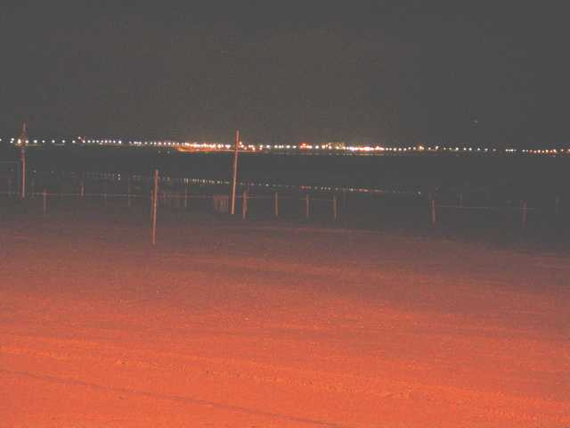
Les "Gonflés à Bloc" à Saint-Brévin, à l'embouchure de la Loire... Prévision météo pas terrible, mais finalement, il fera à peu près beau tout le week-end, pas une goutte de pluie sur les cervolistes et du vent, fort le samedi, moins fort mais suffisant le dimanche. J'arrive vendredi soir, on voit toute la baie s'illuminer...

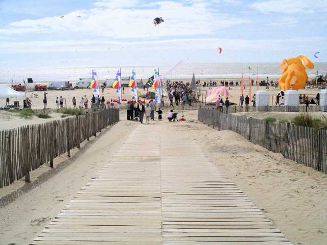
L'accès devient encore plus difficile, une piste cyclable interdit le stationnement sur le boulevard, faut arriver tôt ! Heureusement, une splendide descente en bois facilite les acheminements... mais bouffe 800 m2 de dunes, faut choisir !

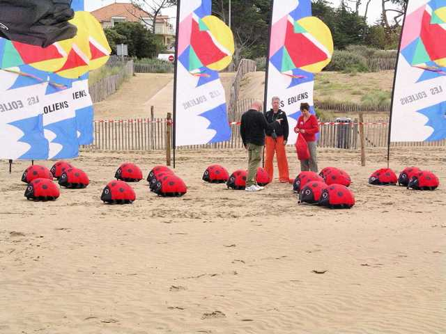
Samedi matin, les bergers sont déjà là et gardent leur troupeau !...

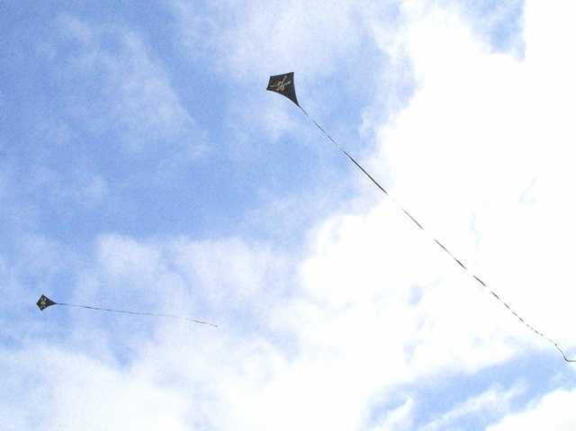
Les Pirates aussi sont arrivés vendredi et leurs Eddies sont déjà en l'air ! Les Gwenn Ha Du devraient être absents quelque temps des terrains, cause choix de vie du meneur...

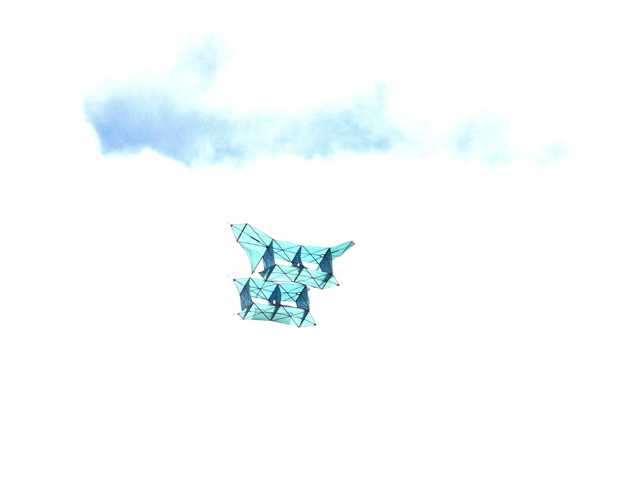
Un magnifique Saconney (je rappelle : Cody=Continu, Saconney=Séparé, selon une formule de Sylvien) très entretoisé contre la déformation et d'un beau bleu azur...

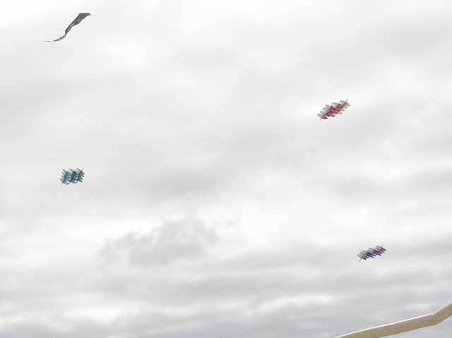
Intéressants aussi, ces cerfs-volants constitués de rondelles de spi tendues par des joncs circulaires et portés à 45° par une armature longitudinale.

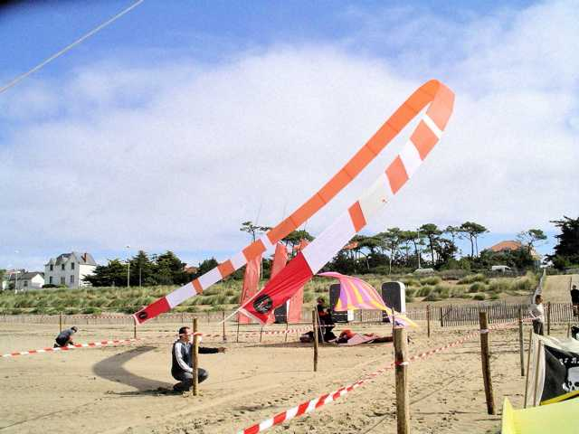
Les Espagnols sont là, avec leur tente bandée par le vent (traction sur les haubans=100kg !) et une magnifique "banderole" assez stable.

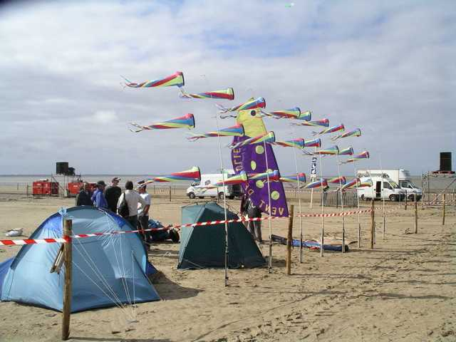
Loïk est là, sans Jacqueline aujourd'hui, elle viendra demain. Il a monté une armada de bannières à turbine, pièges à CVs mais qu'il monte toujours du côté au vent des terrains...

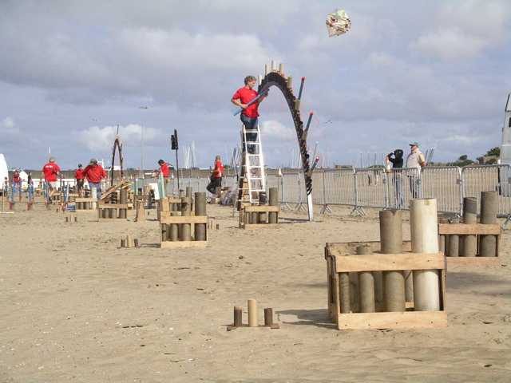
Pendant ce temps, les artificiers commencent à monter le feu d'artifice qui s'annonce monumental !

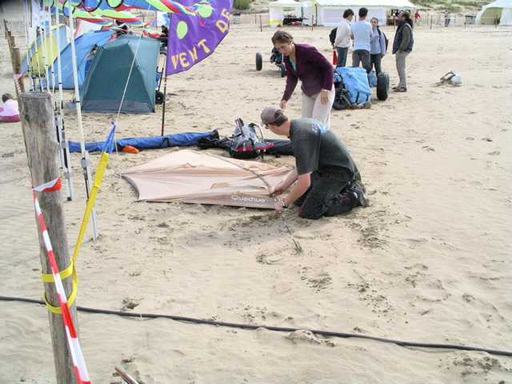
Et des cervolistes montent une Jessica de plus, dans une teinte rosâtre unie.

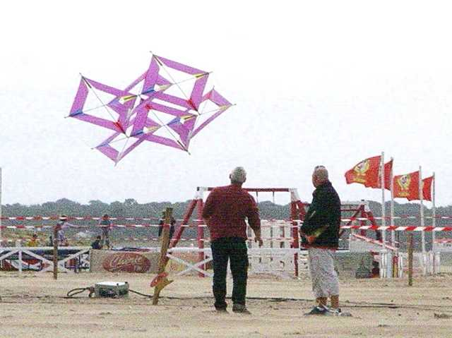
De loin, cette machine est un peu difficile à comprendre !

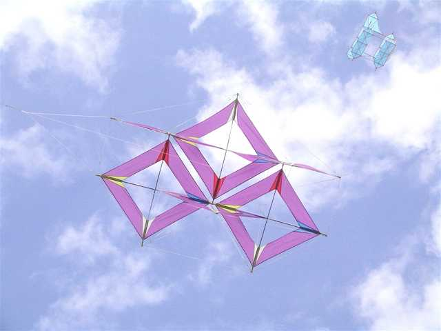
De plus près, on voit qu'elle est composée d'un plan de 3 carrés, avec 3 autres carrés perpendiculaires... Evidemment, rien n'est symétrique, mais ça vole bien !

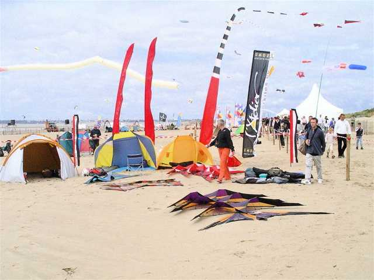
Il y aura aussi des teams avec tout leur matériel et celui de Mickael fait de tout, des paires, du révo, en team, en solo, etc !

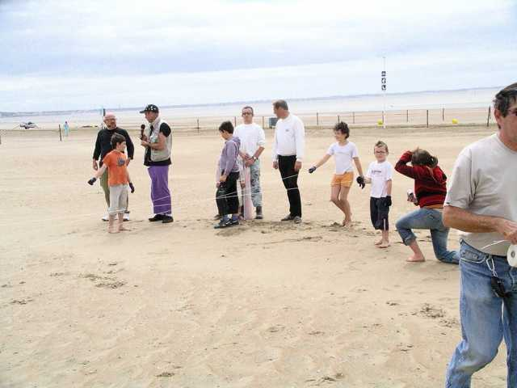
On part fort avec le combat de Rokkakus... enfants ! Tout est fourni, les Rokkakus, les lignes et même... les gants !

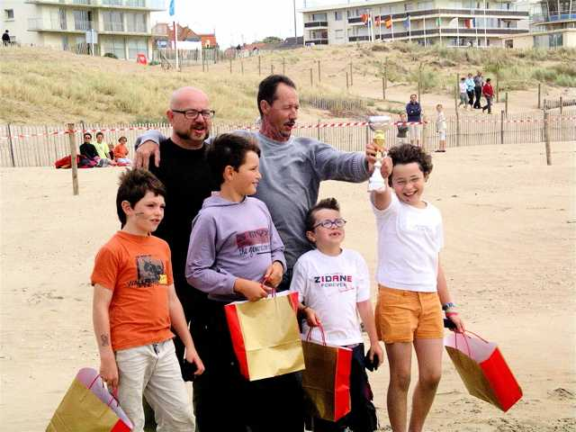
C'est... la demoiselle qui gagne ! Elle est un peu timide pour son premier succès et n'ose pas lever sa coupe ! Ca viendra...

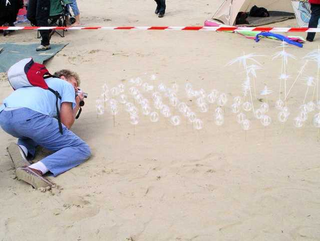
Les Jardins de Thérèse attirent constamment les amateurs d'art, qui veulent se montrer à la hauteur...

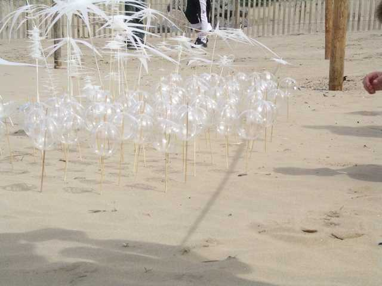
Voilà ce que ça donne, vu de la même altitude, comme si vous aviez 30 cm de haut...

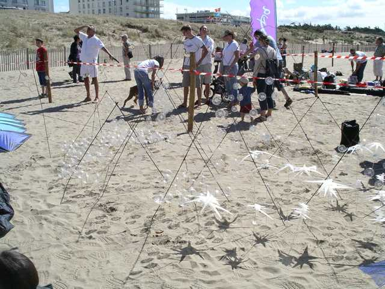
Elle avait aussi des suspensions de ronds transparents (je ne vous dis pas la provenance pour ne pas démythifier, mais le coca, c'est comme le cochon, tout est bon !)...

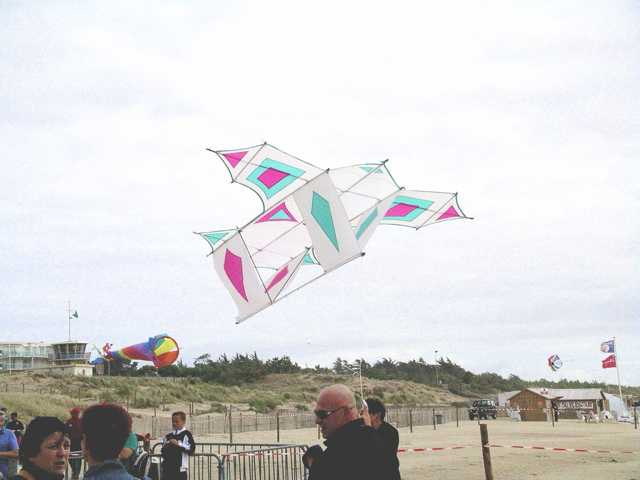
Ce cerf-volant de la famille des Frantzen était très bien tendu, et du coup, volait sans problème...

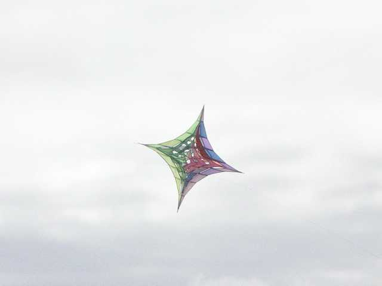
Cette sorte de flocon était simple, vu de face, mais beaucoup plus complexe de profil !

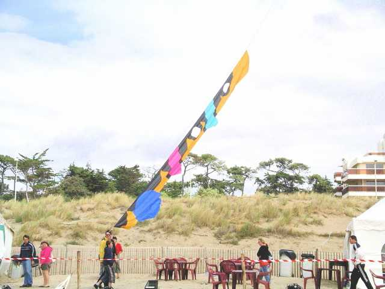
On notait aussi cette belle décoration de ligne, de bonne surface !

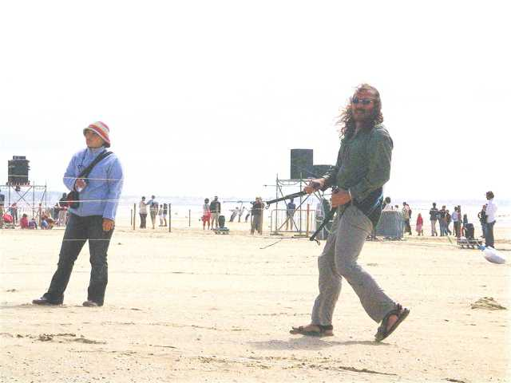
Grande première, Yves le Pirate reprenait les poignées lâchées depuis Berck suite à une rupture de clavicule et d'épaule à épisodes... Ca avait l'air d'aller, pour une reprise...

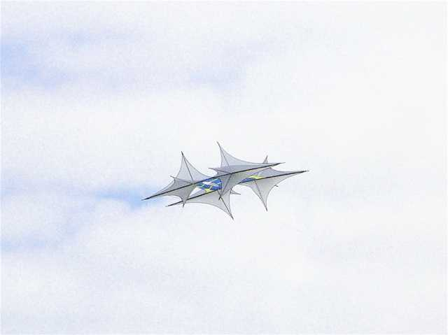
Ce joli cerf-volant épineux a bien aimé le vent fort de ce samedi !

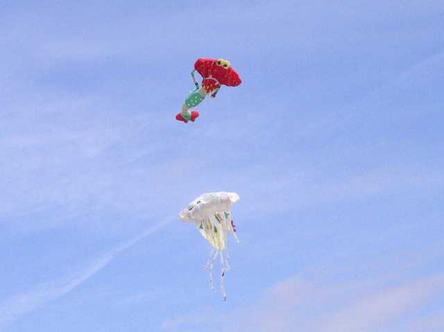
Ces deux CVs gonflables de base flow-form avec beaucoup d'ajouts sont en fait... des pilotables ! Ils ont évolué une bonne partie du temps au-dessus des tentes... voire posés dessus !

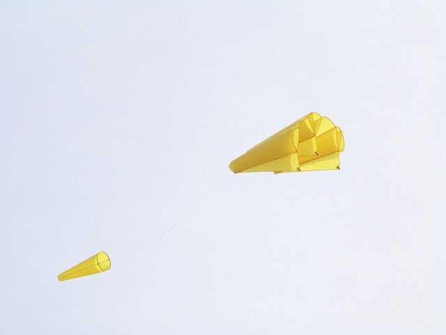
Magnifique sled à poches jaune, qui tractait d'enfer !

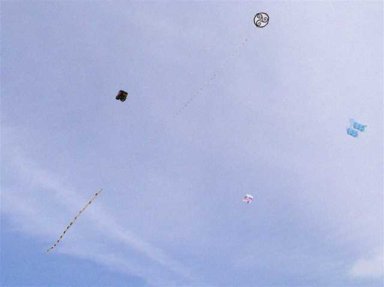
Le Triskel de Yannick a besoin d'une longue, très longue queue... Inconvénient : elle ne glisse pas, et dès qu'un autre CV la touche, l'animal se retourne et tire le gêneur vers le sol pour se venger ! Avisse !

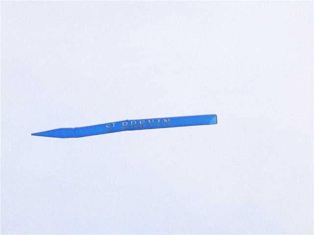
Saint-Brévin faisait sa pub avec ce grand crayon-manche à air.

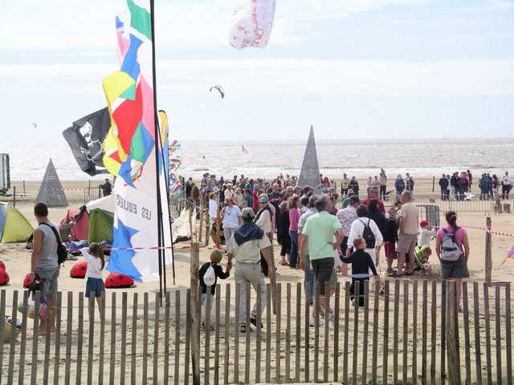
Le public était venu nombreux, malgré une météo défavorable le matin et un vent fort de 30 à 35 km/h !

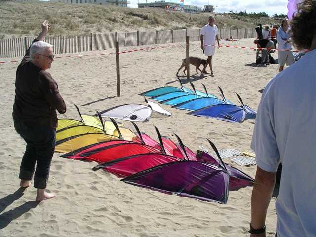
Des teams de pilotables, il y en avait, mais même des teams de papillons !

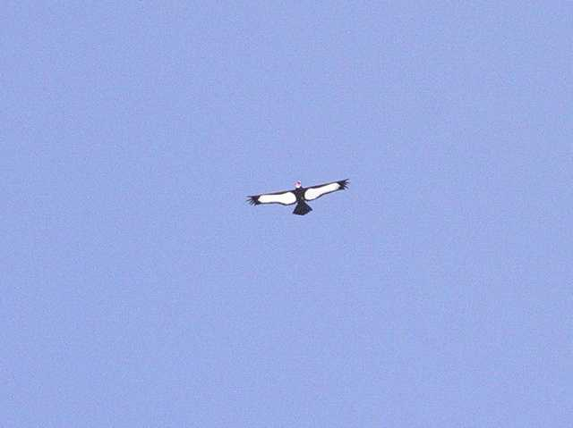
Et le gypaète de Henri Prat qui faisait bien un petit tour de temps en temps, mais il était si haut qu'il avait le temps de se rétablir !

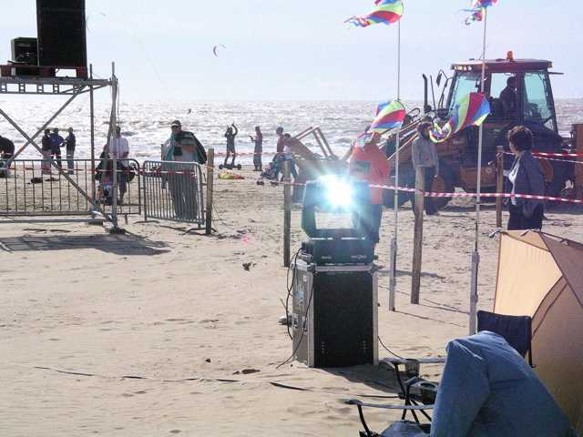
Mais on préparait déjà le vol de nuit, avec des projecteurs de poursuite que même le jour, ils éblouissaient !

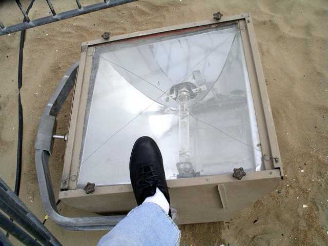
Les projecteurs généraux étaient aussi... généreux.

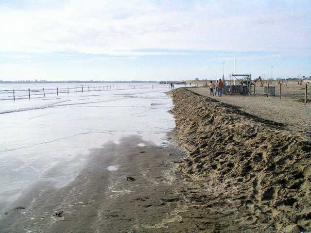
Mais les artificiers et les électriciens étaient un peu inquiets sur le niveau maximum de la marée, alors le Bull avait construit le plus grand château de sable du monde : 100 m de long !

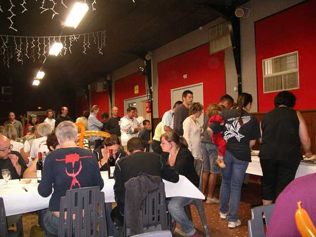
Le soir, comme d'hab, buffet à la Salle de l'Etoile. Pas d'apéro, mais avantage : pas de discours.

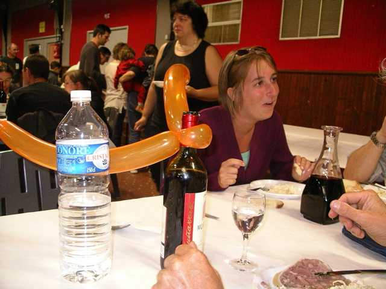
Les Espagnols avaient amené et distribué du Riojo, avec des cornes de taureaux pour montrer l'origine !

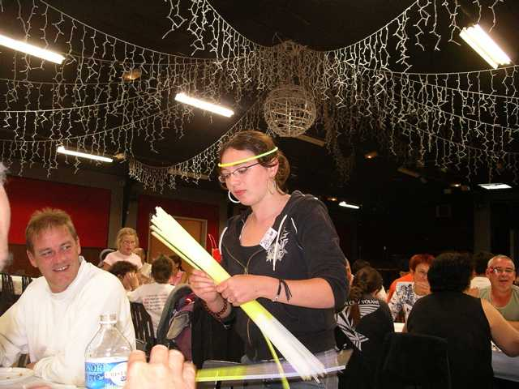
Et on nous a distribué plein de trucs pour être brillants au vol de nuit : milar coloré, étoiles à coller, clignoteur rouge et sticks luminescents !

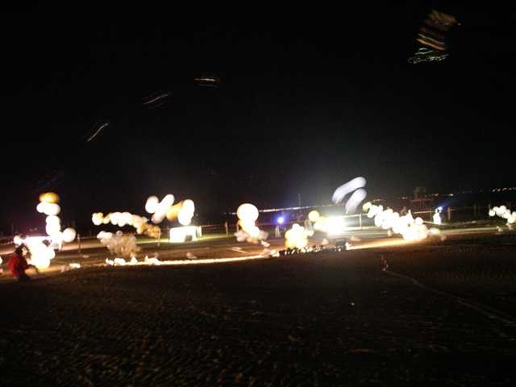
Ensuite, les terrains nous attendaient, dans une ambiance lumineuse de folie, avec déjà une décoration de ballons blancs.

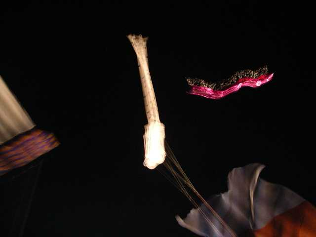
Beau vol de nuit, ensuite, avec un éclairage démentiel, je suis monté un peu vers 100 m, encore éclairé en permanence !

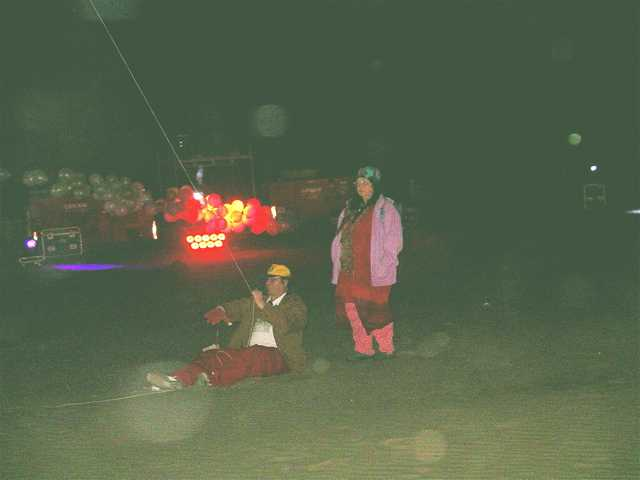
Le vol de nuit s'est bien passé, avec un vent fort qui méritait des positions défensives, mais on n'était pas trop serrés et ça s'est bien passé...

Ensuite un feu d'artifice comme j'en ai rarement vu, avec une base de départ de 100 m qui permettait tout un séquencement, une abondance, une chorégraphie des fusées, parallèles, convergentes, superposées, inoubliable en tout cas !

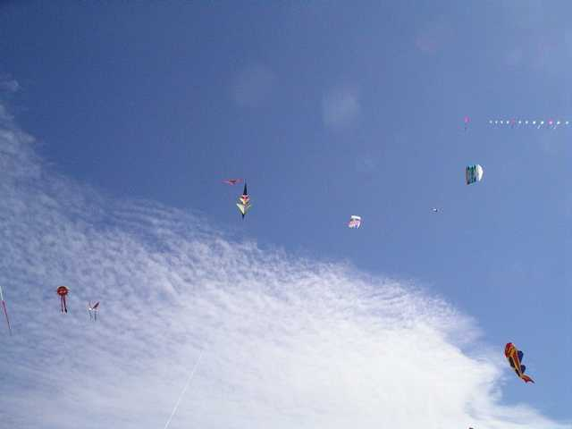
Le dimanche un grand ciel bleu dès la première heure, quelques petits nuages de beau temps pour décorer... avec plein de cerfs-volants, bien sûr ! Et toute la journée, un petit vent force 2 à 3 de la mer, idéal !

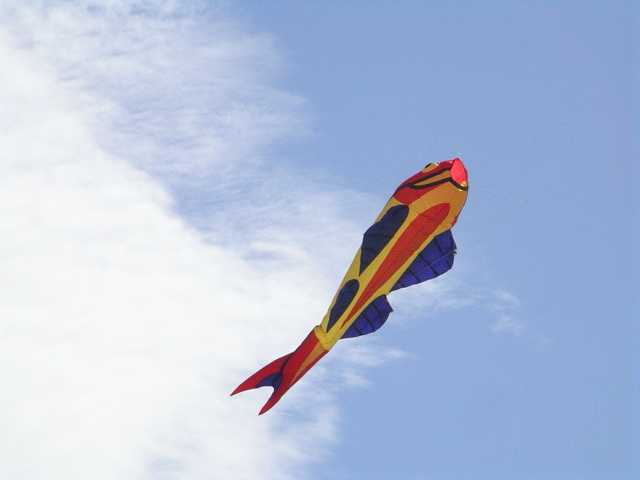
J'aime bien ce grand poisson qui n'est pas une queue gonflée, mais un vrai cerf-volant qui vole tout seul...

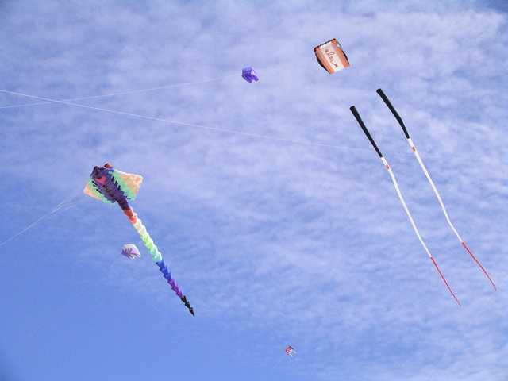
Les AWITA étaient là aussi avec leur bestiaire habituel, dont la raie Manta...

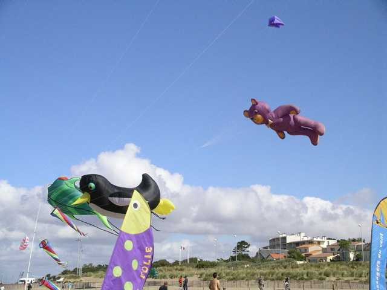
...et le reste de leur parc, le poisson vert, le pingouin, le nounours...

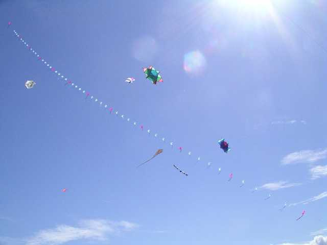
Aussi, devant le train, ces flocons plats relativement simples qui portent peut-être un nom particulier que j'ignore !

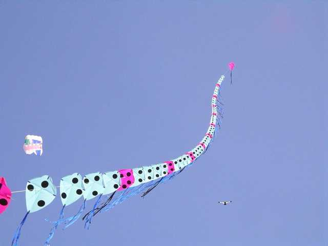
Et le train lui-même, de coccinelles, je suppose qu'on le reverra à Dieppe !

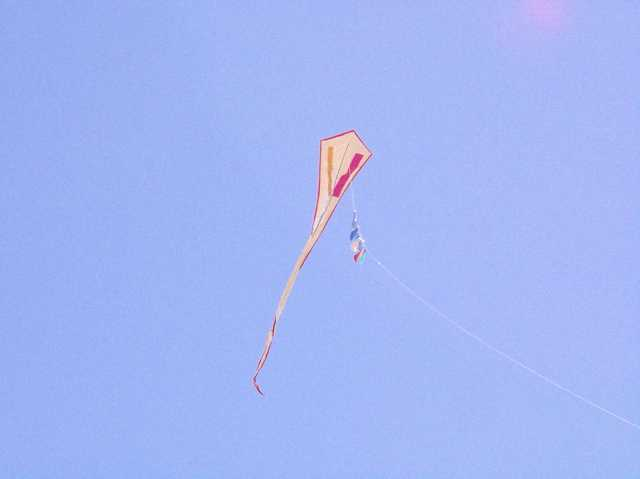
Variations sur le thème "Eddy", celui-ci très long, avec des restes du vol de nuit sur sa ligne...

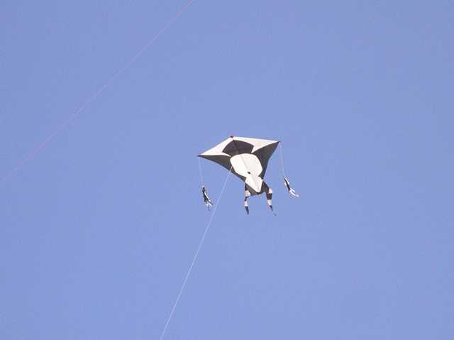
...et celui-là avec une queue de poisson et des pendeloques chinoises au bout des ailes...

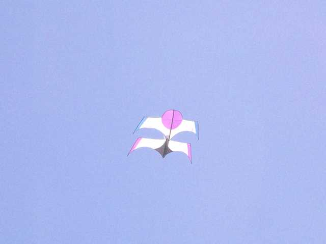
Ce CV, sur le schéma très revisité des mouettes, bien tendu et en tandem, à la décoration architecturée...

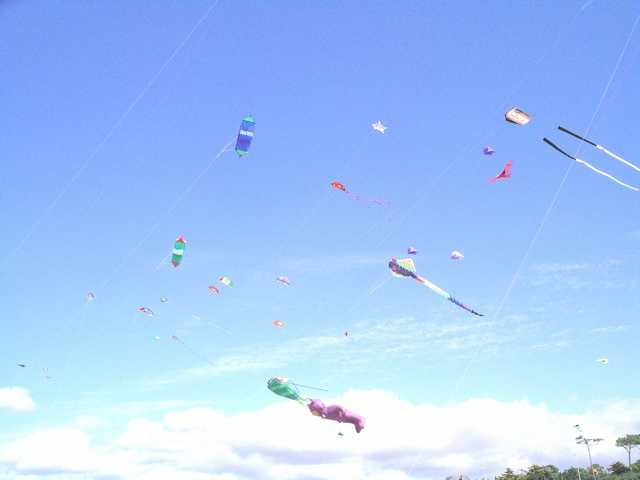
Avec un joli ciel et un vent idéal, pas mal de monde en l'air, mais on aurait pu en mettre encore plus, il y avait de la place libre...

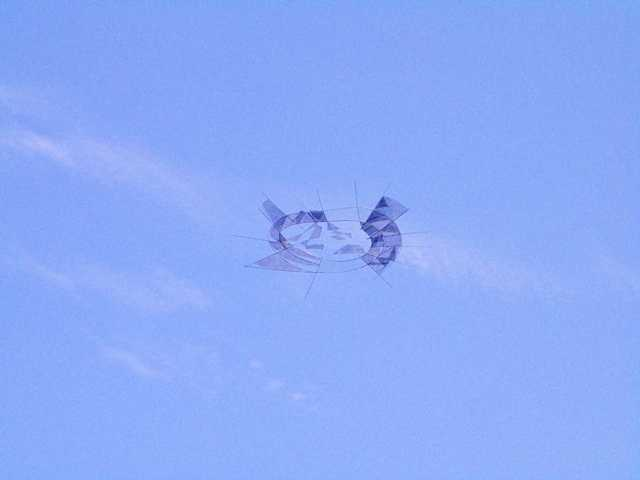
Thérèse avait encore construit, dans la ligne du CV aperçu à Meudon, celui-ci sur une dynamique tourbillonnaire...

Et celui-là, mon préféré ! Elle en avait aussi construit d'autres, en rouge et en jaune légers, mais moi, c'est le bleu...

Ce jardin, lui, ne comportait que des matériaux naturels avec de belles hélices en bois taillé...

Là, à gauche des successions de barres, baguettes, pailles, à droite, des trucs en plumes...

De beaux cerfs-volants dans le ciel, mais tout le monde leur tourne le dos ! Normal, c'est l'heure du traditionnel apéritif à la paillote à 100 m...

Plein de petits amuse-gueules, au fond des brochettes carottes, fromages, etc. avec les sauces pour tremper. Devant des classiques, mais aussi de petits piments rouges à déguster très lentement !

Et un grand bol à punch, mais avec du Planteur, c'est frais, mais attention, ça descend facilement !

Et on déguste tout ça à la terrasse, sur la plage, au soleil ou à l'ombre, Tahiti, quoi...

Retour sur la plage pour le pique-nique fourni sur les nappes et sous les parasols...

Après le pique-nique, mon Condor est toujours en l'air, Yannick avait descendu son Triskel...

Il a sorti sa coccinelle, qui a de belles queues mais elles ont tendance à s'emmêler et à perdre leur effet stabilisateur (ensuite, voir Triskel...) !

Loïk avait monté son amusante petite chouette, bien adaptée à ce vent léger à moyen...

Les Espagnols avaient sorti un grand Faga très stable. Je ne connais pas la signification de la déco montagno-hélvétique, si elle en a une...

On a retrouvé aussi ce CV très esthétique avec son armature courbe et sa forme "aérodynamique"...

Ce Edo volait bien, comme tous les Edos, celui-ci est très coloré...

Yannick avait aussi sorti sa grande dague, il n'a pas peur de mettre plusieurs CVs en l'air ! Elle se tient mieux, maintenant qu'elle est moins courbée et mieux tenue.

Nous avons eu aussi beaucoup de démonstrations de pilotables, en 2 ou 4 lignes, en individuel et en teams !

Et encore un flow-form pilotable, amusant mais pas vraiment beau !

Remarquable aussi ce Edo du Soleil Levant sur le Fuji-Yama...

Et pour rester plus ou moins au Japon, ce Kimono avec une petite tête...

...et celui-ci plus classique à la décoration géométrique...

Un peu dans le même style que le Kimono à tête, ce beau delta "pixellisé" qui représente des km de coutures !

Chez Awita, le grand pingouin était en fait une femelle, qui a donné le jour à un charmant pingouinet !

Le grand Gecko, lui, reste toujours impressionnant, même et surtout s'il se contorsionne près du sol faute de vent !

Et en fin d'après-midi, mégateam pour les deux lignes, à onze, et d'une bonne tenue, pas en rattrapage constant comme certains !

Il n'y a qu'à voir le calme des vieilles troupes au sol, facilité il est vrai par un vent modéré qui laisse le temps de peaufiner les positions...

Du coup, quand tout le monde se croise, ça forme une belle pyramide double, sauf pour quelques cosaques qui quittent avant ma photo...

Et dans la surface des gros, plein d'oiseaux de, ou à la manière de, Georges Peters !

Celui-ci, dans des teintes un peu violine...

..et celui-là, noir et blanc avec quelques touches de couleur !

Une astuce de cervoliste : la plaquette où chaque bride passe dans un trou, et ça devrait permettre de démêler facilement en coulissant la plaquette....

Michel-Marie était là aussi avec son multi-boîtes pour lequel il n'a pas encore de nom...

Avant de se quitter dans la joie, une petite distribution de prix à la famille la plus brillante au vol de nuit ! Le prix est une boule tournante avec plein de petits miroirs comme dans les boîtes de nuit ! Le moteur est aussi incorporé !

Bon, c'est fini mais il fait beau, rien n'empêche de continuer à voler... Les tractionnistes s'amusent à se poursuivre ou à se faire tomber avec des petites voiles, Nasa ou autres !

Et on termine calmos avec un zéphyr agréable, faut pas trop se fatiguer avant de prendre la route !
Une bonne météo, plein de cerfs-volants et de cervolistes, un splendide feu d'artifice, que demander de plus ? Merci à l'équipe !